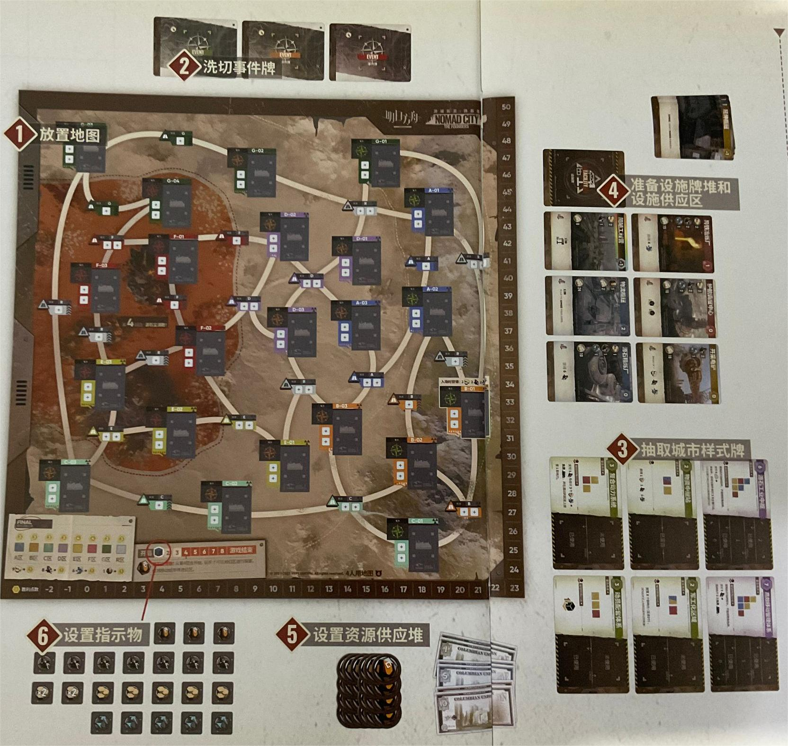
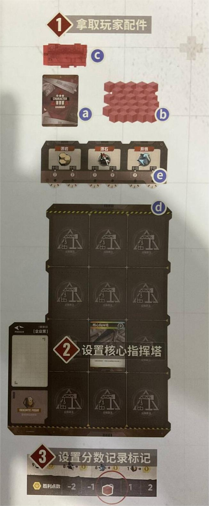
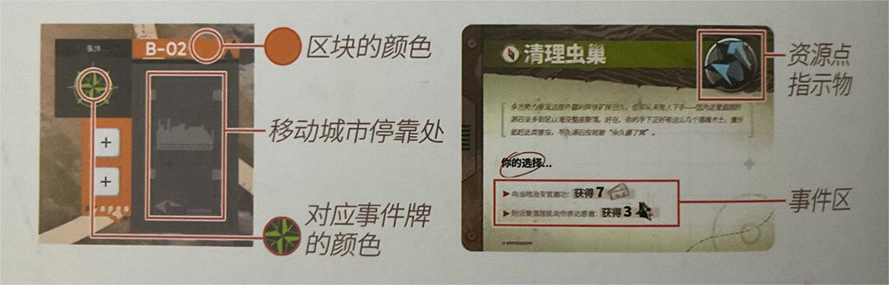
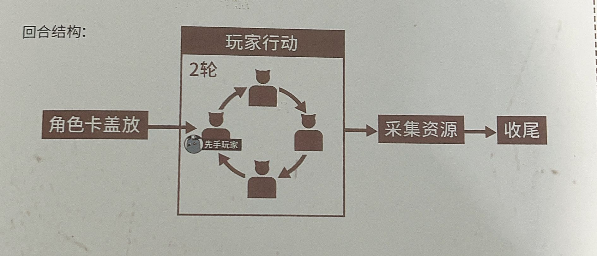
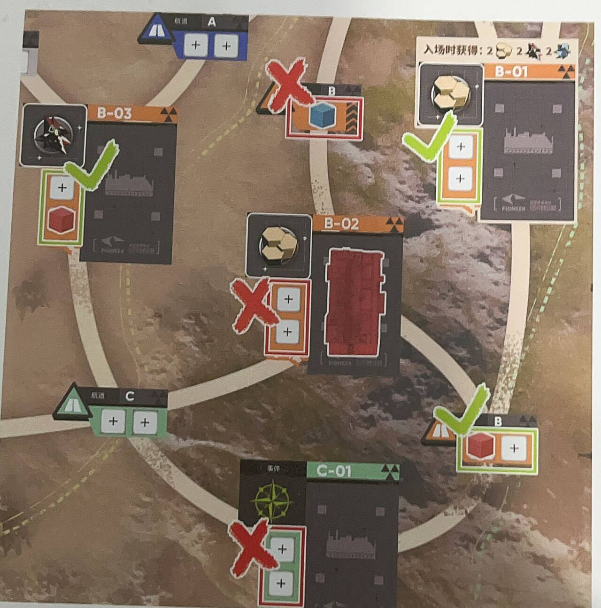
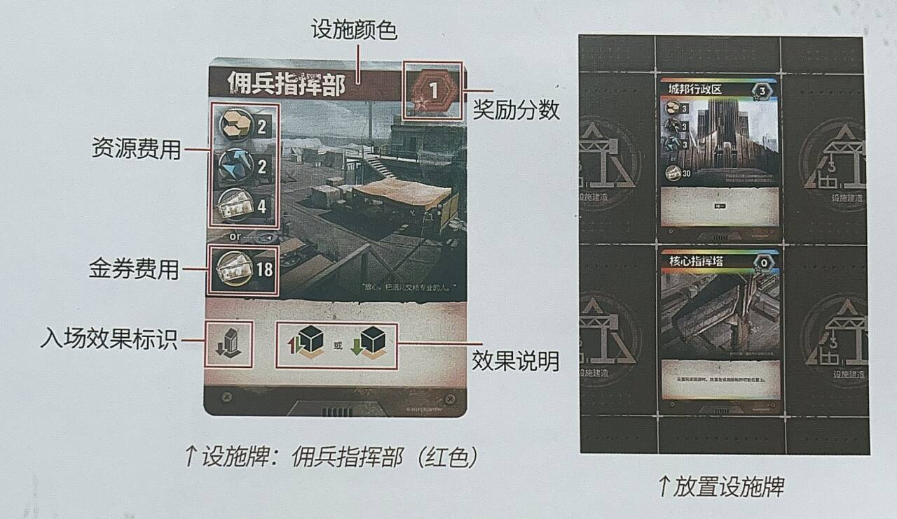
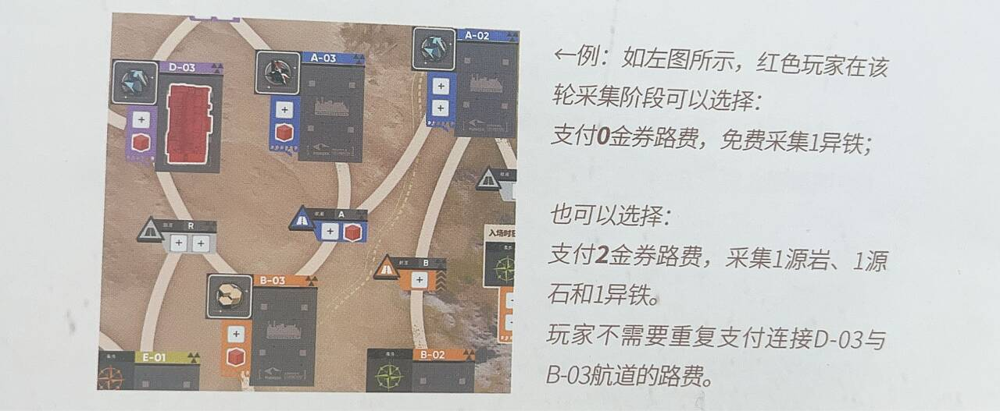

鉴于我的室友锐评明日方舟桌游游城拓荒:筑基者(以下简称桌游)规则书写的像生物试卷, 我们在本文中我们用人话来介绍该桌游的基本玩法.
我们主要介绍四人玩法.
在下文中, 使用粗体表示道具类专有名词, 而斜体表示强调或其余需要标注的专有名词. 除非另加说明, 牌堆均后背朝上摆放并应当做恰当的洗切.
在下文中, 我们将用
起始设置
我们分两部分(公共区域和玩家个人区域)分别介绍起始设置.
公共区域
- 将地图下方标有4人用地图的一面朝上置于桌面.
- 将22张事件牌按照牌背的颜色分为红, 黄, 绿三个牌堆, 置于地图旁.
- 将6张城市样式牌牌面朝上地放在地图旁.
- 从48张设施牌中取出4张核心指挥塔, 3张延申枢纽放在一旁, 将剩余的41张牌作为设施牌堆置于地图旁. 之后从设施牌堆中抽出6张, 正面朝上放置在地图旁作为设施供应区.
- 将35颗源石和40张哥伦比亚代金券放在地图旁作为资源供给物.
- 将22个资源点指示物放在地图旁备用, 将回合数标记放置在地图上回合数计数条"1"的位置.
以上工作完成后桌面如下图所示: 
玩家版面
- 从绿, 黄, 红, 蓝四种颜色中任取一颜色, 拿取以下物品:
- 5张对应颜色的初始角色牌作为自己的手牌;
- 30个对应颜色的玩家标记;
- 1个对应颜色的移动城市模型;
- 1块城市面板;
- 1个资源计数器, 并将其数值归零. 上述步骤完成后桌面如下图所示.
- 拿取一张核心指挥塔, 并将其放置在如下图所示的位置上.
- 从自己的玩家供应堆
里拿去一个玩家标记, 防止在地图分数轨道的"0"处. 此后玩家将使用该物品记录自己的分数. 
开始游戏
本桌游的游玩共分为三个部分: 开局入场, 拓荒探索, 分数结算. 下面我们分别介绍每一步骤的规则.
注:
- 在游戏中, 除非另加说明, 否则我们总是从起始玩家开始顺时针(或逆时针)依次进行操作.
- 在游戏中, 有且仅有源石和哥伦比亚金券在不足时可以使用其他物品替代. 这相当于是说, 游戏中除了以上两种道具外都有数量限制.
开局入场
- 用喜欢的方式决定一名玩家获得起始玩家标记.
- 每位玩家按照已经约定的先后顺序依次选择一个不同的,
对应事件牌为绿色的资源点作为初始资源点, 并做如下操作:
- 将自己的移动城市放置在该资源点的停靠点上.
- 翻开一张绿色事件牌,
将对应的资源点指示物放置到该资源点上,
并选择其事件区的一个事件选项, 获得相应的奖励. 我们单独指出:
当玩家选择
作为初始资源点时, 可以立即获得两个源岩, 两个源石和两个异铁. 注意: 当玩家获得或失去这些(源岩, 源石, 异铁)资源时, 拨动自己的资源计数器来标识自己的持有量. - 以下示意图解释了上述操作: 
- 从第一回合的起始玩家开始, 第
名玩家( )获得 , 而第 名玩家获得 .
拓荒探索
本阶段是游玩过程的主要部分, 由8个连续的回合构成, 每个回合包含如下4个阶段:
- 角色牌盖放
- 玩家行动
- 采集资源
- 收尾
每一回合的结构如下图所示: 
下面我们逐一介绍每个阶段的规则.
角色牌盖放
在这个阶段中, 每名玩家需要从自己的手牌中选择1张, 背面朝上放置. 此时如果玩家已没有手牌, 则将自己弃牌区的所有角色都回收后再进行角色牌的盖放.
玩家行动
一个完整的玩家行动阶段包含2轮玩家行动. 玩家行动阶段从该回合的起始玩家开始. 起始玩家执行行动直到结束, 之后由顺时针的下一名玩家行动. 一个回合的结束是指所有玩家行动均结束. 在一个回合结束后, 再由该回合的起始玩家开始进行第二轮行动.
在每一轮中, 玩家应当执行一个主要行动. 在执行主要行动前后, 玩家可以执行任意多个快速行动.
- 主要行动:
- 部署: 放置一个影响力.
- 调度: 移动一个影响力, 执行两次.
- 探索: 支付路费
结算事件, 在目标资源点放置影响力. - 城市移动: 支付
源石 移动城市, 在出发点放置影响力. - 建设: 支付费用
放置设施牌并结算分数, 结算入场效果. - 特殊行动: 使用已宣告的城市样式卡所解锁的特殊行动.
- 快速行动:
- 使用角色卡: 翻开自己盖放的角色牌, 选择卡上的效果发动.
- 宣告城市样式: 用已建设的设施满足宣告条件, 每个设施只能用一次.
下面我们详细介绍每个行动. 为了保证阅读的连贯性, 我们首先介绍快速行动, 再回来介绍主要行动.
使用此行动时, 玩家需按顺序执行以下操作:
- 翻开角色牌: 将自己在角色牌盖放阶段盖放的角色翻开;
- 使用角色牌的效果:
一张角色牌包含策略和计谋两种互相独立的效果.
- 如果使用角色牌的玩家是起始玩家, 则该玩家可以按自己喜欢的顺序依次连续使用两种效果(也可以只使用一个).
- 非起始玩家只能选择策略或计谋之一使用.
- 弃置角色牌: 若非特殊说明, 使用角色牌效果后, 玩家需要将该牌正面朝上移至自己的角色牌弃牌区. 使用过的角色牌在返回手牌之前无法再次在角色牌盖放阶段被盖放.
玩家使用角色牌时, 必须遵循回合内限制,
即玩家必须使用在本回合盖放的角色牌, 且只能使用一次. 
玩家可以通过建设, 组合不同设施, 满足场上城市样式宣告条件要求的颜色(彩色在设施组合时可以看作任意颜色), 位置组合. 在设施颜色位置关系不变的前提下, 宣告条件可以被旋转, 但不能被翻转(见下图).
执行此动作时, 玩家需按顺序执行以下操作:
- 宣告城市样式:
告知其他玩家自己要宣告的城市样式以及自己使用的组合方式. 之后,
将用于宣告的设施牌旋转
以标识其已使用(见上图). 同一个设施只能用于一次城市样式的宣告, 不能重复使用. - 放置玩家标记: 从自己的玩家供应堆里拿取一个玩家标记,
放置在希望宣告的城市样式牌上.
- 在该卡上第一次放置玩家标记时,
- 若该样式牌为
级, 将玩家标记放置于未使用或已宣告区域. - 若该样式牌为
级, 将玩家标记放置于 区域. - 对于其他情形, 将玩家标记放置于已宣告区域.
- 若该样式牌为
- 注意: 城市样式牌上可以有多为玩家的复数个玩家标记.
- 在该卡上第一次放置玩家标记时,
- 结算宣告效果: 获得城市样式牌牌面指示的奖励分数, 并结算该城市样式牌的宣告效果.
执行此行动时, 玩家放置一次影响力. 放置影响力时, 玩家需要从自己的玩家供应堆里拿去一个玩家标记, 并将其放在满足以下条件的影响力空格上:
- 该影响力空格里没有影响力;
- 如果该影响力空格在资源点上, 那么该资源点必须已经被放置了资源点指示物, 并且没有其他玩家的移动城市停靠.
执行此行动时, 玩家可以连续执行至多两次(也就是说你可以执行一次, 但事实上恒等变换也是变换所以也可以视作移动了两次)移动影响力. 移动影响力时, 玩家需要将自己的影响力移动到地图上的其他影响力空格上. 作为目标的影响力空格需要满足如下两个条件:
- 该影响力空格没有影响力.
- 如果该影响力空格在资源点上, 那么该资源点必须已经被放置了资源点指示物, 并且没有其他玩家的移动城市停靠.
注意: 上述规则并没有做出移动前所在位置和移动后所在位置道路连通的假设, i.e. 你可以全图移动, 无论是否道路连通.
下图标识了蓝色玩家可以放置影响力和不能放置影响力的位置, 供读者参考. 
执行此行动时, 玩家需要按以下顺序执行以下操作:
- 支付路费: 声明一个没有资源点指示物, 且已开放探索
的资源点, 并支付从玩家移动城市停靠的资源点连接到目标点的路费 . - 结算事件: 翻开一张和资源点颜色对应的事件牌, 将对应的资源点指示物放置在该资源点上, 并选择其事件区的一个事件选项, 获得对应的奖励.
- 在目标资源点放置影响力: 从自己的玩家供应堆拿取一个玩家标记, 作为影响力放置在目标点的影响力空格上.
- 前三回合内红色区域的资源点未开放探索. 玩家无法在此时对红色区域的资源点进行探索或将其作为城市移动的目的地.
- 连接红色区域资源点的航道不受回合限制. 在任意回合玩家都可以以这些航道为效果(例如放置影响力)的目标, 或使用这些航道.
- 探索红色区域的资源点时, 翻开的事件牌所示的资源种类上可能标有
. 这意味者在放置对应指示物标记时, 使用指示物上标有 的标记. 同时, 在采集阶段, 玩家选择采集该资源点时一次可以获得 个对应的资源.
- 玩家通过若干数量的航道将移动城市所在地与目标地相连.
- 连接的过程中, 每经过一条没有自己影响力的航道, 需支付金券.
- 如果该航道上有对手玩家的影响力, 玩家必须选择一个在该航道上的影响力,
向该影响力的所有者支付
金券. - 如果该航道上没有对手玩家的影响力, 也需要支付
金券.
- 如果该航道上有对手玩家的影响力, 玩家必须选择一个在该航道上的影响力,
向该影响力的所有者支付
下图给出了一个示意, 蓝色玩家为了将城市移动至
执行此行动时, 玩家需要按顺序执行以下操作:
- 支付
源石. - 移动城市: 选择一个满足以下所有条件的资源点:
- 该资源点与移动城市相邻, 即是仅通过一条航道连接的资源点;
- 该资源点没有其他玩家的移动城市停靠;
- 如果该资源点为红色, 那么资源点需要已开放探索.
- 在出发点放置影响力: 从自己的玩家供应堆拿取一个玩家标记, 作为影响力放置在起始点的影响力空格上.
下图给出了一个蓝色玩家将城市从
当玩家的城市面板仍有空位时, 玩家可以执行此行动. 此时, 玩家需要按以下顺序执行以下操作:
- 支付费用: 选择处于设施供应区的一张设施牌
, 支付该牌的资源费用或金券费用 (例如牌上可能既有资源费用又有金券费用, 只要选择其一支付即可). - 放置设施牌并结算分数: 拿取这张牌, 将该设施牌放置于自己的城市面板的任意空位上, 获得设施牌牌面指示的分数.
- 结算入场效果.
示意图: 
特殊行动与城市样式为对应关系, 玩家必须在城市样式牌上有自己的玩家标记,
且玩家标记不在
玩家使用特殊行动时, 要先将自己在对应城市样式牌的玩家标记移至底部的已使用区域.
使用特殊行动时, 玩家需要遵循以下限制:
- 回合内限制: 一名玩家只能在一回合内使用一次特殊行动.
- 额外限制: 部分特殊行动有额外的使用规则和限制.
采集资源
当两轮玩家行动结束后, 进入该回合的采集阶段. 每位玩家同时从资源点上获取对应资源, 执行如下操作:
- 选择资源点: 在这个阶段, 玩家可以选择任意数量的, 有自己影响力放置或自己移动城市停靠的资源点.
- 支付路费: 玩家支付路费将所有选择的资源点和移动城市所在地相连接. 路费的计算方式与前所述相同, 但在采集资源阶段, 每一条航道只需要支付一次路费, 即使该航道同时用作连接移动城市所在地与复数资源点. 玩家不能使用在该阶段获得的金券支付路费. 
- 获取资源: 玩家获得所选资源点上指示物对应的资源.
无论被选择的资源点上有多少影响力/是否有自己的移动城市停靠,
每次采集每个资源点只能获取一次资源. 若资源指示物对应
个/ 个资源, 此时该采集获得 个/ 个资源.
收尾
所有玩家完成获取资源后, 进入该回合的收尾阶段. 玩家将执行以下操作:
- 结算收尾阶段效果: 按照本回合的行动顺序结算收尾阶段的效果. 如果一名玩家有复数效果需要结算, 那么由该玩家决定结算效果的先后顺序.
- 复位样式标记:
- 将
类城市样式牌上, 位于已使用区域的玩家标记放回未使用区域. - 将
级城市样式牌上, 位于已使用区域的玩家标记向下移动一格.
- 将
- 传递起始玩家标记: 将起始玩家标记按顺时针传递给下一位玩家.
- 移动回合数标记: 将回合数标记移动到下一回合的数字处.
全部执行完毕后该回合结束, 进入下一回合.